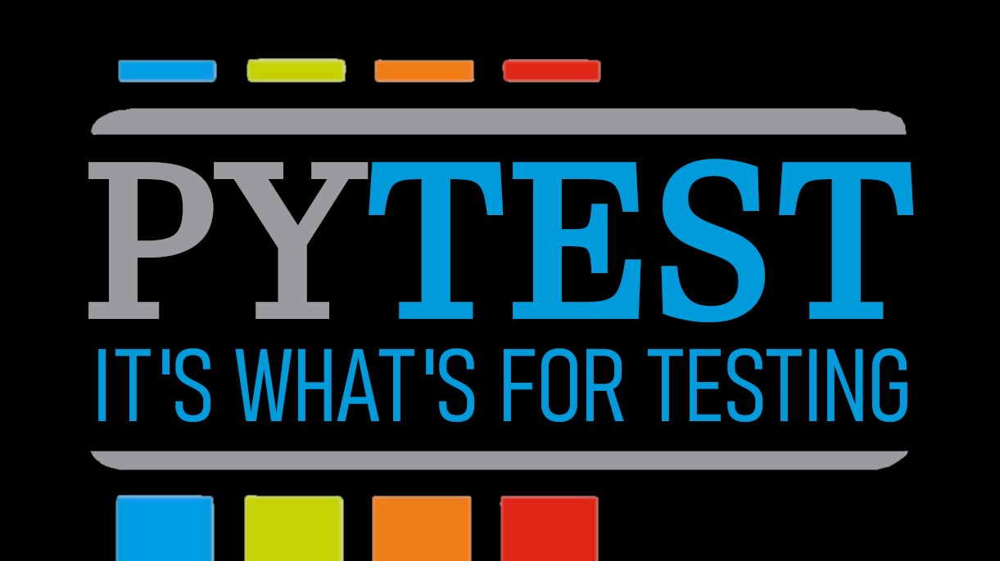

pytest is the premier Python testing framework. It scales smoothly from small imperative tests all the way to huge test suites powered by metaprogramming, while maintaining a clean, DRY style. In this talk, we’ll do a whirlwind, example-heavy tour of pytest’s “killer features”: assertion rewriting, fixtures, parameterization, hooks, and plugins.
Josh Karpel is a software developer at the Center for High Throughput Computing. He works on Python tooling for the HTCondor high-throughput computing platform and high-throughput machine learning and image processing techniques.